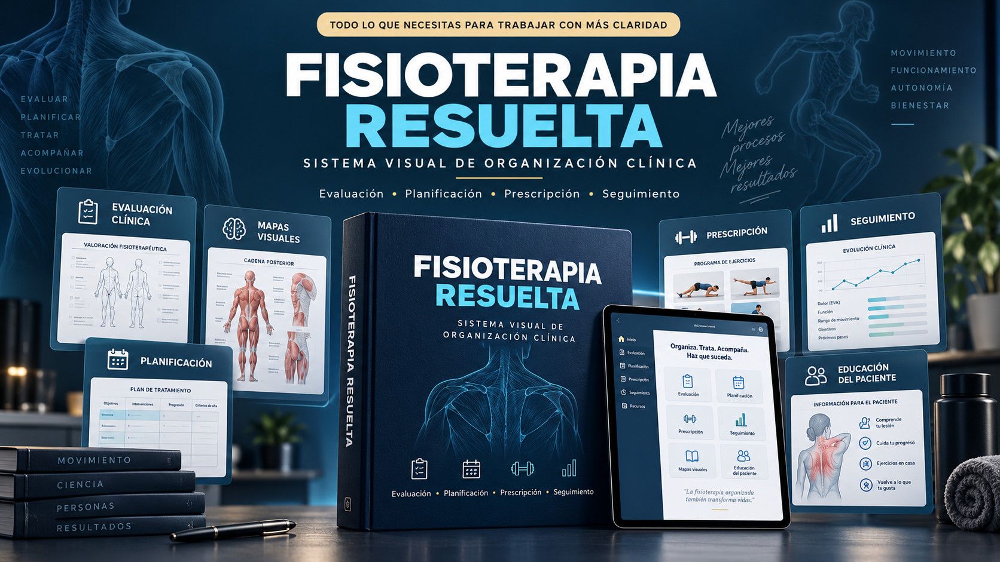
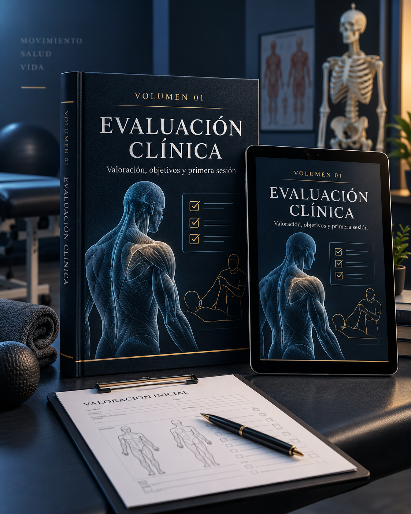
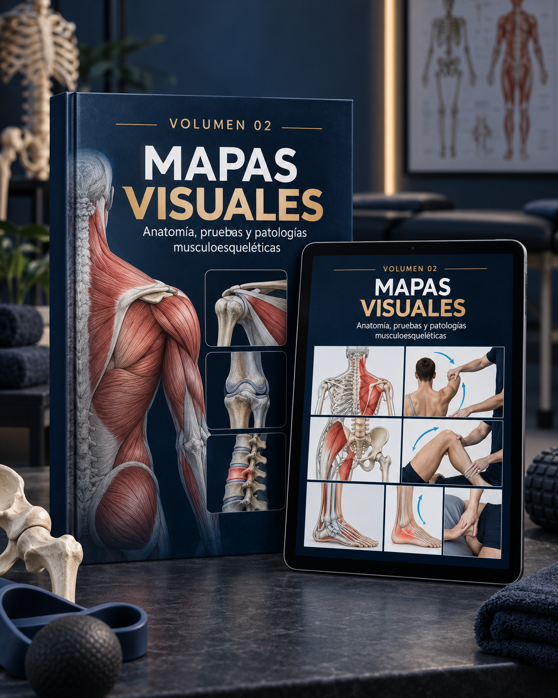
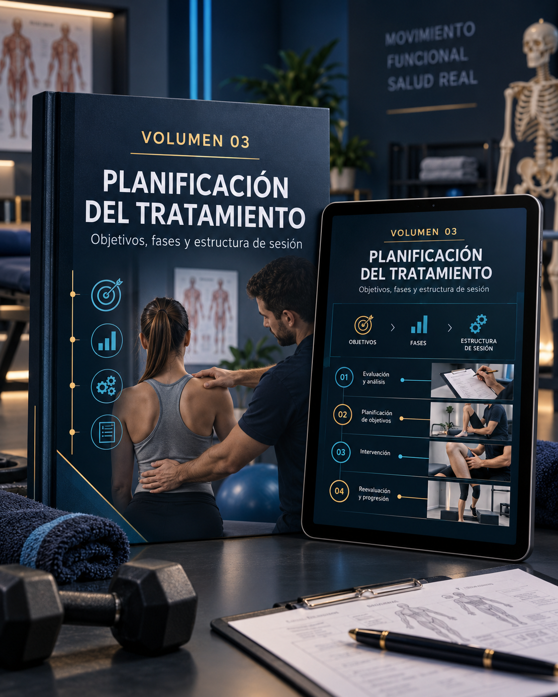
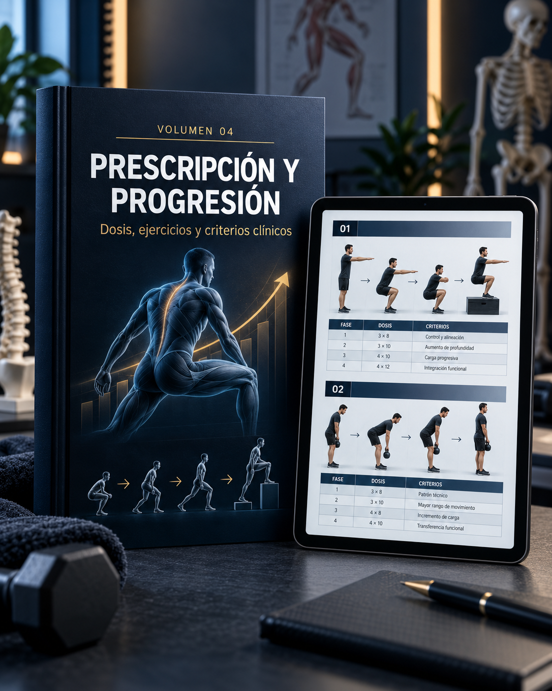
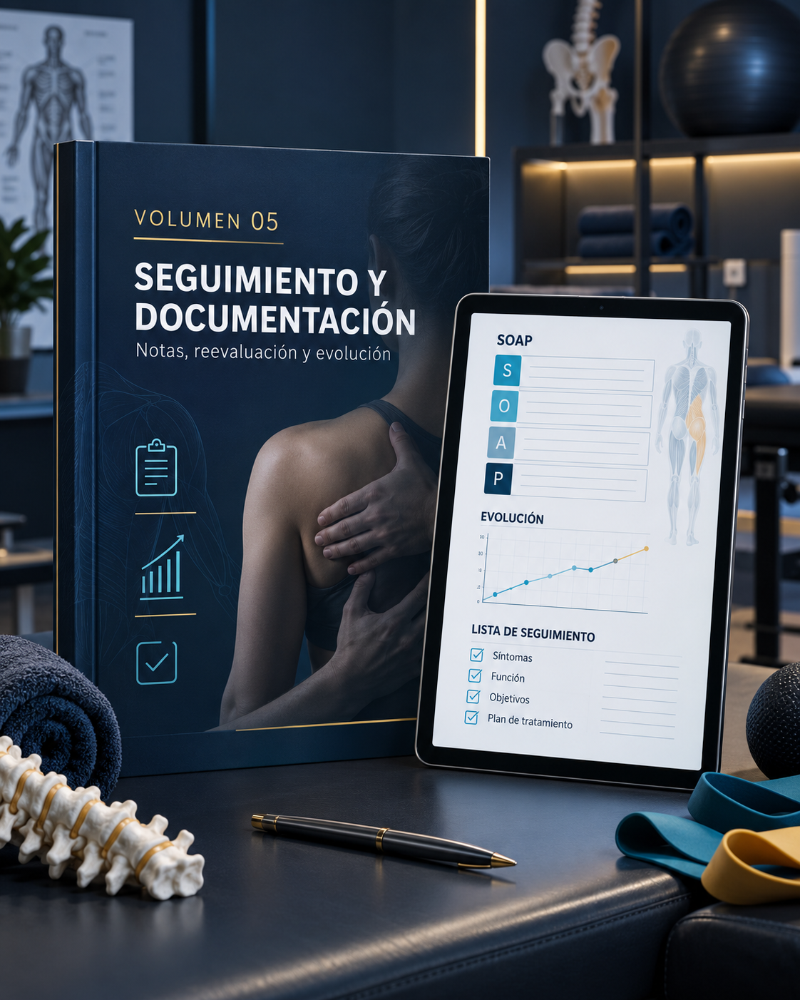
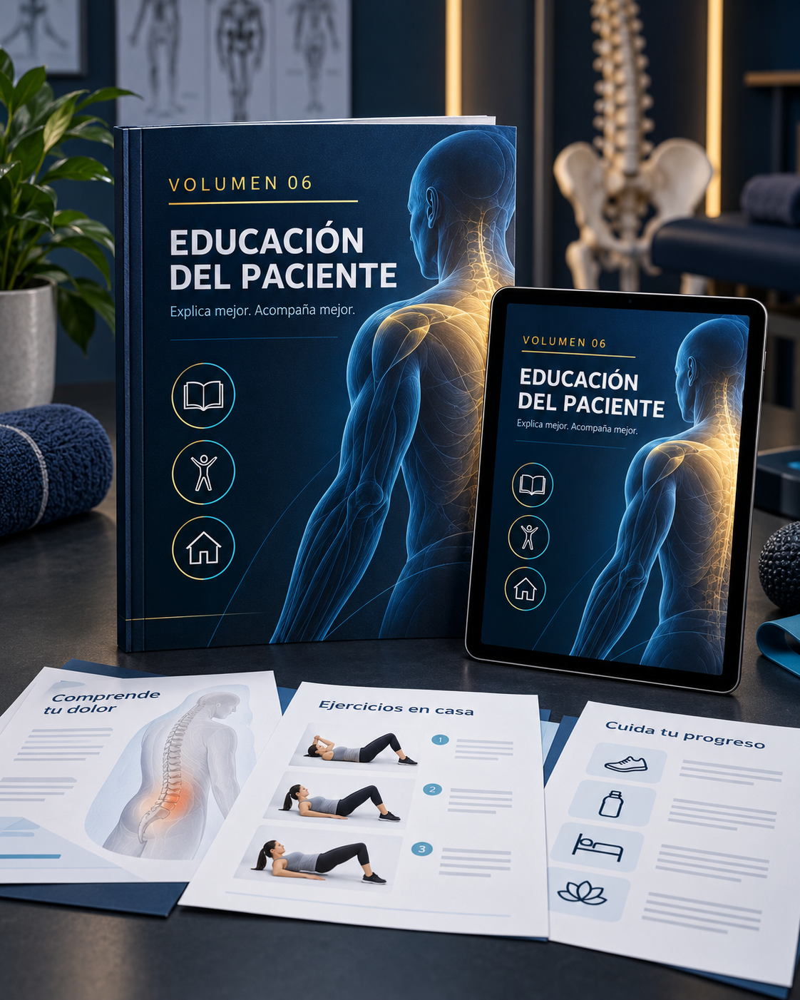

Planificar desde cero
Terminas una sesión y todavía tienes que decidir qué evaluar, qué tratar y qué hacer después.
La mayoría de los fisioterapeutas no necesita más información dispersa. Necesita un sistema para evaluar, organizar, prescribir, explicar y seguir cada caso sin empezar desde cero.
Oferta única después de tu compra · acceso digital · pago único

Cuando la estructura depende de tu memoria, cada sesión consume más energía de la que debería.
Terminas una sesión y todavía tienes que decidir qué evaluar, qué tratar y qué hacer después.
Saltas entre apuntes, libros, capturas y pestañas para encontrar una referencia útil.
No siempre es evidente si debes avanzar, simplificar, mantener o modificar el plan.
Notas, objetivos, ejercicios y seguimiento quedan separados en diferentes lugares.
Fisioterapia Resuelta organiza recursos visuales y plantillas de trabajo para ayudarte a tomar decisiones, preparar sesiones y comunicar el plan con más claridad. Puede complementar FisioKit si ya lo utilizas, pero es una oferta independiente.
El sistema digital para organizar la evaluación, la planificación del tratamiento, la prescripción de ejercicios, las progresiones, el seguimiento y la documentación clínica.
En lugar de improvisar cada caso con recursos dispersos, abre el volumen correcto, elige lo que necesitas, adáptalo al paciente y comienza la sesión con una estructura clínica más clara.

Valoración, objetivos y primera sesión.

Anatomía, pruebas y patologías musculoesqueléticas.

Objetivos, fases y estructura de sesión.

Dosis, ejercicios y criterios clínicos.

Notas, reevaluación y evolución.

Explica mejor. Acompaña mejor.
Fisioterapia Resuelta reúne la estructura y el apoyo visual que necesitas para trabajar con menos caos y más claridad clínica.
Completa tu acceso a Fisioterapia Resuelta
Finaliza tu compra de forma segura a través de Hotmart.
🔒 Pago seguro · acceso digital · pago único
No. FisioKit es un producto independiente. Fisioterapia Resuelta puede complementar ese trabajo, pero esta oferta se centra en su propio sistema visual, sus plantillas y sus recursos clínicos.
Sí. El sistema incluye una biblioteca de más de 200 mapas visuales de fisioterapia musculoesquelética como apoyo para la consulta y el razonamiento clínico.
No. Es un recurso educativo y organizativo. Siempre debes adaptar la evaluación y la intervención a cada paciente, tu formación y la normativa local.
Sí. El material es digital y puede consultarse desde celular, tablet o computador.
No. Es un pago único por el acceso digital al material incluido.